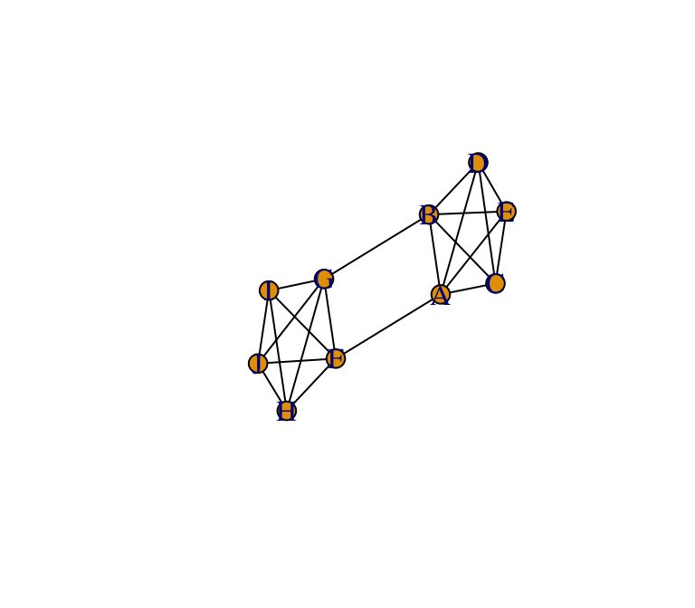
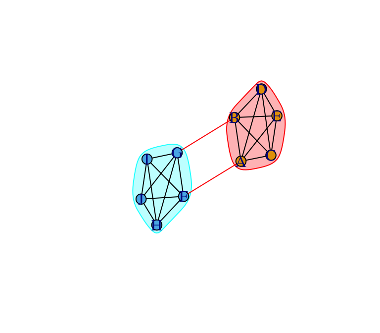
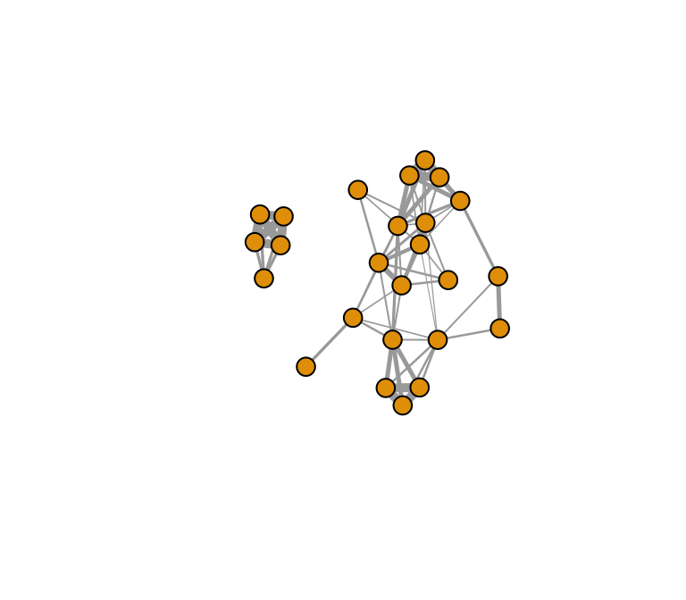
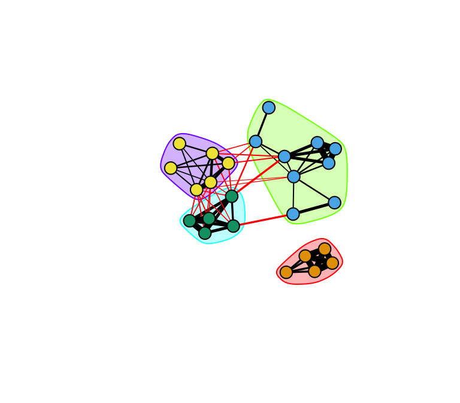
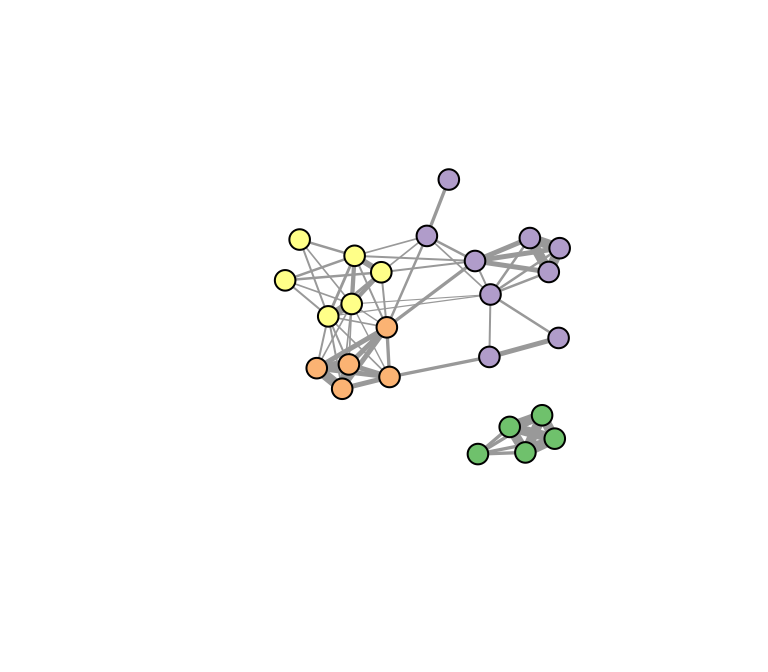
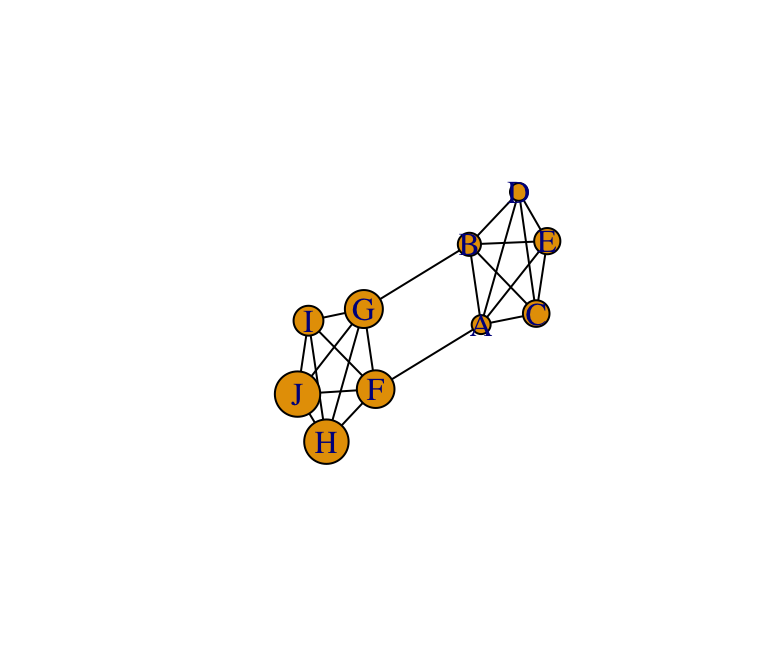
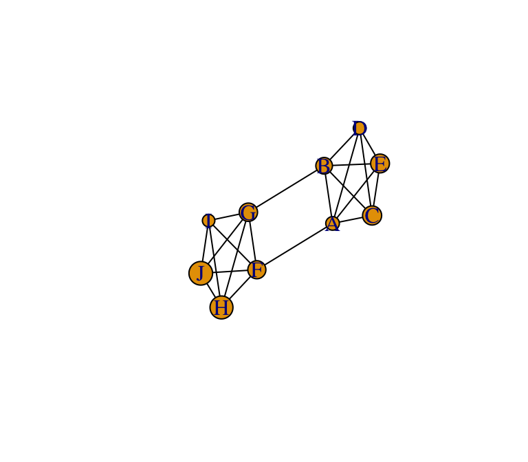

| Load packages you need for this tutorial: |
r library(igraph) |
## Warning: package 'igraph' was built under R version 3.5.2 |
r library(assortnet) |
Figure 1: An example of a network with community structure. From Newman 2006-PNAS
One of the ubiquitous properties of networks is that they exhibit community structure, the presence of discrete clusters of nodes that are densely connected, which themselves are only loosely connected to other clusters (Figure 6.1). In ecological contexts, these may be clusters of individuals that form social groups, groups of populations that form cohesive genetic or ecological units, or sets of species that have intimate ecological and evolutionary interactions. The problem is, how do we detect the presence of such clusters or communities, and how can we quantify the degree of community structure?
In a series of papers, Mark Newman and colleagues presented a quantitative measure called modularity, which quantify the degree to which such clusters are discrete (Girvan & Newman 2002; Newman & Girvan 2004; Newman 2006). The modularity index, Q, is a measure of the proportion of edges that occur within communities , relative to the expected proportion if all edges were placed randomly.
\(Q = \frac{1}{2m} \left(A_{ij}-\frac{k_i k_j}{2m}\right)\delta\left(c_i,c_j\right)\)
Where \(m\) is the total number of edges in a network, \(A_ij\) is the adjacency matrix, \(k_i\) and \(k_j\) are the degrees of node \(i\) an \(j\), \(c_i\) and \(c_j\) refer to the communities to which \(i\) and \(j\) belong, and \(\delta\left(c_i,c_j)\right)\) is the Kroenecker delta function, which equals 1 when \(c_i = c_j\) and 0 otherwise. This value theoretically ranges from 0 to 1.
One class of methods for community detection (often called ‘modularity-optimization method’) to find the partitions in the network that assigns nodes into communities such that \(Q\) is maximized. The problem, however, is that there are too many possible partitions that can exist in a given network (ranging from 1 to n number of communities, with every possible combination of nodes), and so an exhaustive search is usually not feasible. Thus, modularity-optimization techniques rely on search algorithms that use different approaches (e.g., agglomerative versus divisive methods) with different strengths and weaknesses (we will hight a few below).
One should also be aware that modularity-based methods of community detection is not fool-proof. In particular, there is a well-studied resolution limit to modularity optimization: these methods tend to miss small, well-defined communities when there are other large communities. They also suffer from the basic assumption that each node belongs to just one community. While other community detection methods exist that can overcome some of these shortfalls, they too often have their weaknesses. In short, there is no perfect approach to community detection. Useful references to these debates include Palla et al. (2005), Fortunato (2010), Lancichinetti & Fortunato (2011), and countless others.
igraphThere are several functions available for community detection in igraph and other packages.
| Function | Basic Idea | Reference |
|---|---|---|
edge.betweenness.community() |
One of the first in the class of “modularity optimization” algorithms. It is a “divisive” method. Cut the edge with highest edge betweenness, and recalculate. Eventually, you end up cutting the network into different groups. | Newman & Girvan 2004 |
fastgreedy.community() |
Hierarchical agglomerative method that is designed to run well in large networks. Creates “multigraphs” where you lump groups of nodes together in the process of agglomeration in order to save time on sparse graphs. | Clauset et al. 2004 |
walktrap.community() |
Uses random walks to calculate distances, and then use agglomerative method to optimize modularity | Pons & Latapy 2005 |
spinglass.community() |
This method uses the analogy of the lowest-energy state of a collection of magnets (a so-called spin glass model). | Reichardt & Bornholdt 2006 |
leading.eigenvector.community() |
This is a “spectral partitioning” method. You first define a ‘modularity matrix’, which sums to 0 when there is no community structure. The leading eigenvector of this matrix ends up being useful as a community membership vector. | Newman 2006 |
label.propagation.community() |
I have not used this one… | Raghavan et al. 2007 |
cluster_louvain() |
The “Louvain” method, so-called because it was created by a group of researchers at Louvain University in Belgium. Community aggregation | Blondel et al. 2008 |
rnetcarto::netcarto() |
Simulated Annealing method. Thought to be useful for smaller networks. Available through ‘rnetcarto’ package (Doulcier 2015). | Guimera & Amaral 2005 |
To illustrate how to measure modularity and assortativity using igraph, let’s start by creating a simple graph with clear community structure. First, we’ll create a network consisting of two clusters that are completely connected, which themselves are loosely connected.
g=make_graph(~A:B:C:D:E-A:B:C:D:E, F:G:H:I:J-F:G:H:I:J, A-F, B-G)
set.seed(7)
l=layout_with_fr(g)
plot(g, layout=l, edge.color="black")
Let’s now apply a community detection algorithm to figure out the optimal division of this network into communities. Because the community division in this example is very clear, we can choose any of the community detection method in the table above and we are likely to come up with the same answer. Let’s use one called the edge betweenness method:
eb=edge.betweenness.community(g)
eb## IGRAPH clustering edge betweenness, groups: 2, mod: 0.41
## + groups:
## $`1`
## [1] "A" "B" "C" "D" "E"
##
## $`2`
## [1] "F" "G" "H" "I" "J"
## The resulting object is a ‘communities object’, which includes a few pieces of information-the number of communities (groups), the modularity value based on the node assignments, and the membership of nodes to each community. We can call each of these values separately (outputs not shown):
length(eb) #number of communities## [1] 2modularity(eb) #modularity## [1] 0.4090909membership(eb) #assignment of nodes to communities## A B C D E F G H I J
## 1 1 1 1 1 2 2 2 2 2You can also use this communities object to produce a pretty network figure that shows the community structure by incorporating it into the plot() function.
plot(eb, g, layout=l)
Let’s try another example, this time with a more complex network. We can use the sample sparrow network that we’ve used in some other tutorials. Let’s import the association data (individual-by-group matrix) and use asnipe and igraph to create a network.
library(asnipe)
library(igraph)
assoc=as.matrix(read.csv("https://dshizuka.github.io/networkanalysis/SampleData/Sample_association.csv", header=T, row.names=1)) #import individual-by-group data
gbi=t(assoc) #transpose the data into group-by-individual
mat=get_network(t(assoc), association_index="SRI") #create adjacency matrix with "simple ratio index"
g.sparrow=graph_from_adjacency_matrix(mat, "undirected", weighted=T) #make into igrpah objectPlot the network to see:
plot(g.sparrow, edge.width=E(g.sparrow)$weight*5, vertex.label="")
Use one of the community detection algorithms. Here’s an example with the Louvain method:
com=cluster_louvain(g.sparrow)
com## IGRAPH clustering multi level, groups: 4, mod: 0.61
## + groups:
## $`1`
## [1] "23820" "23726" "23831" "23763" "23853"
##
## $`2`
## [1] "23777" "23774" "23779" "23773" "23862" "23732"
##
## $`3`
## [1] "23771" "23756" "23759" "23768" "23758"
##
## $`4`
## + ... omitted several groups/verticesPlot the network with the communities assigned.
set.seed(2)
plot(com, g.sparrow, vertex.label="", edge.width=E(g.sparrow)$weight*5)
… or if you don’t like the coloring scheme, you can customize it. Let’s get fancy and use RColorBrewer to assign colors.
library(RColorBrewer)
colors=brewer.pal(length(com),'Accent') #make a color palette
V(g.sparrow)$color=colors[membership(com)] #assign each vertex a color based on the community assignment
set.seed(2)
plot(g.sparrow, vertex.label="", edge.width=E(g.sparrow)$weight*5)
One major pattern common to many social networks (and other types of networks) is homophily or assortment—the tendency for nodes that share a trait to be connected. The assortment coefficient is a commonly used measurement of homophily. It is similar to the modularity index used in community detection, but the assortativity coefficient is used when we know a priori the ‘type’ or ‘value’ of nodes. For example, we can use the assortment coefficient to examine whether discrete node types (e.g., gender, ethnicity, species, etc.) are more or less connected to each other. Assortment coefficient can also be used with “scalar attributes” (i.e., continuously varying traits).
Figure 2: Two networks with different patterns of assortment. Node color represents some discrete node value (e.g., male vs. female). Left, an assortative, or homophilous, network. Right, a network with no assortativity.
The assortment coefficient has a general form,
\(r = \frac{\sum_{ij} \left(A_{ij}-k_ik_j/2m\right)x_ix_j}{\sum_{ij} \left(k_i\delta_{ij}-k_ik_j/2m\right)x_ix_j}\)
where \(k_i\delta_{ij}\) is the degree of \(i\) excluding its connection with \(j\). This is actually a form of the Pearson correlation coefficient. The coefficient is large (approaches 1) if nodes with similar values are more connected and small (approaches 1) when similar nodes are less connected. The value is 0 when edges are random with respect to node values.
For more on the assortativity coefficient, I recommend reading the original paper on this by Newman (2002), and its extension by Farine (2014).
There are at least two easy ways to calculate the assortment coefficient. In the igraph package, there is a function for assortativity(). One benefit to this function is that it can calculate assortment in directed or undirected network. However, the major downside is that it cannot handle weighted networks.
To measure assortativity on weighted networks, use the assortment.discrete() or assortment.continuous() function in the assortnet library (Farine 2014). Here, I will first demonstrate how to use the assortativity() function in igraph, and then do the equivalent with the assortnet package functions.
igraphLet’s use the same example network to demonstrate how to calculate assortativity, and to compare the difference between modularity and assortativity.
Let’s start by assigning each node a value–let’s say nodes vary in size.
set.seed(3)
V(g)$size=c(rnorm(5, mean=20, sd=5), rnorm(5, mean=30, sd=5)) #assign sizes to nodes using two normal distributions with different means
plot(g, layout=l, edge.color="black")
Now, we can measure the degree to which this network exhibits assortment by node size.
assortativity(g, V(g)$size, directed=F)## [1] 0.5708429As you can see, this network exhibits high levels of assortativity by node size.
We can also convert the size variable into a binary (i.e., discrete) trait and calculate the assortment coefficient.
V(g)$size.discrete=(V(g)$size>25)+0 #shortcut to make the values = 1 if large individual and 0 if small individual, with cutoff at size = 25
assortativity(g, V(g)$size.discrete, directed=F)## [1] 0.4358974As a comparison, let’s create a node attribute that varies randomly across all nodes in the network, and then measure the assortativity coefficient based on this trait. We will plot the figure with square nodes, just to make it clear that we are plotting a different trait.
set.seed(3)
V(g)$random=rnorm(10, mean=20, sd=5) #create a node trait that varies randomly for all nodes
assortativity(g, V(g)$random, directed=F)## [1] -0.06392816plot(g, layout=l, edge.color="black", vertex.size=V(g)$random)
You can see that there is little assortment based on this trait.
Just to be extra clear, this network is still exhibits community structure (A through E and F through J), but the trait we are measuring does not exhibit assortativity.
assortnet packageLet’s now try to get the same result using the function in the assortnet package, and then measure the assortment coefficient in a weighted network.
First, recreate the results from section 5.2.2. In the assortnet version of the functions, the input is an adjacency matrix rather than an igraph object. So what we need to do is generate the adjacency matrix and then run the asssortment.continuous() function:
adj=as_adjacency_matrix(g, sparse=F)
assortment.continuous(adj, V(g)$size)## $r
## [1] 0.5708429assortment.discrete(adj, V(g)$size.discrete)## $r
## [1] 0.4358974
##
## $mixing_matrix
## 0 1 ai
## 0 0.4545455 0.1363636 0.5909091
## 1 0.1363636 0.2727273 0.4090909
## bi 0.5909091 0.4090909 1.0000000You’ll notice that the assortment_discrete() function output includes a “mixing matrix”, which is useful if you want to know the cumulative edge weights that occur between individuals with the same vs. different vertex labels.
With assortnet, we can also use weighted edges. So let’s add edge weights randomly and calculate the coefficient. Since the functions take adjacency matrix as input, we’ll have to regenerate the matrix with the attr="weight" argument after adding edge weights.
E(g)$weight=runif(length(E(g)), min=0, max=1)
adj=as_adjacency_matrix(g, sparse=F, attr="weight")
assortment.continuous(adj, V(g)$size)## $r
## [1] 0.5621146assortment.discrete(adj, V(g)$size.discrete)## $r
## [1] 0.498065
##
## $mixing_matrix
## 0 1 ai
## 0 0.4628330 0.1218816 0.5847146
## 1 0.1218816 0.2934038 0.4152854
## bi 0.5847146 0.4152854 1.0000000Community Structure
Assortment